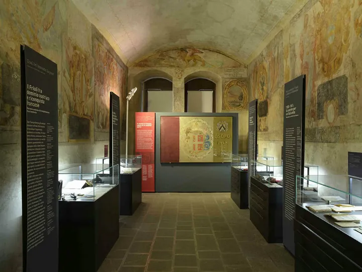

Friuli
dom 6 set · dalle 16:00
Quando Udine cambio bandiera
Visita guidata alla mostra sul Risorgimento friulano attraverso opere e reperti restaurati.
 Indicazioni
Indicazioni
- Costi e prenotazioni
- €5 più ingresso al museo · Prenotazione obbligatoria
- Programma
- Data e orario confermati. Posti limitati; prenotazione tramite telefono o email.
- In caso di maltempo
- Nessuna indicazione specifica pubblicata.
- Note
- La quota della visita si aggiunge al biglietto d’ingresso del museo.
L’EVENTO
Descrizione completa
Una visita guidata alla mostra “1866–2026. Restauri per riscoprire l’arte della libertà”. Stemmi, ritratti, fotografie e rare oleografie raccontano il Risorgimento friulano, i cambi di confine e il passaggio tra Impero Asburgico e Regno d’Italia.
La quota della visita si aggiunge al biglietto d’ingresso del museo. Posti limitati.
IL PROGRAMMA
Programma e orari
Appuntamenti raccolti dalle fonti elencate. Dove manca un orario, non è ancora disponibile in questa scheda.
Domenica 6 settembre
- 16:00 · Inizio della visita guidata
- Percorso tra opere e reperti restaurati della mostra 1866–2026
INFORMAZIONI UTILI
Prima di partire
- La quota della visita si aggiunge al biglietto d’ingresso del museo.
- Posti limitati.
- Contatti: 347 2681647 · didatticamusei@comune.udine.it
ORGANIZZAZIONE